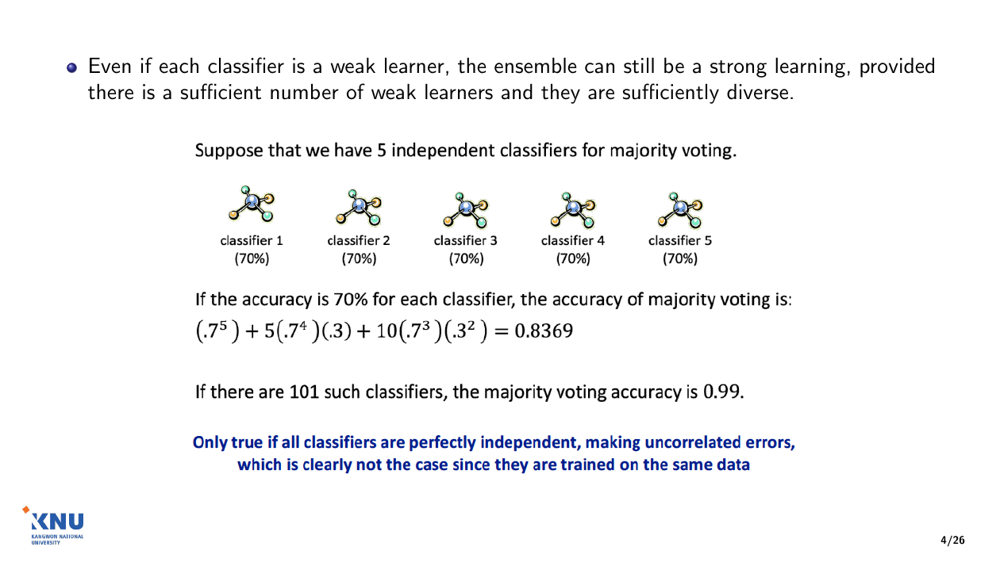
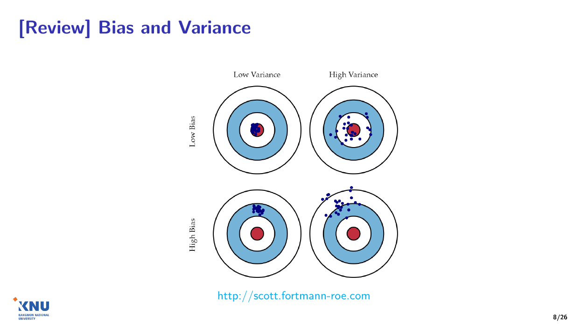
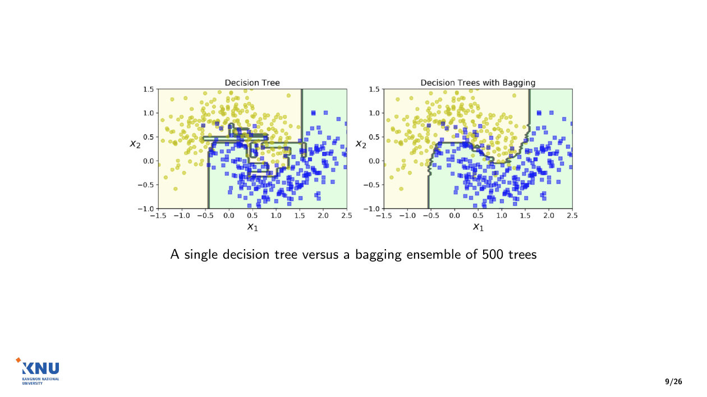
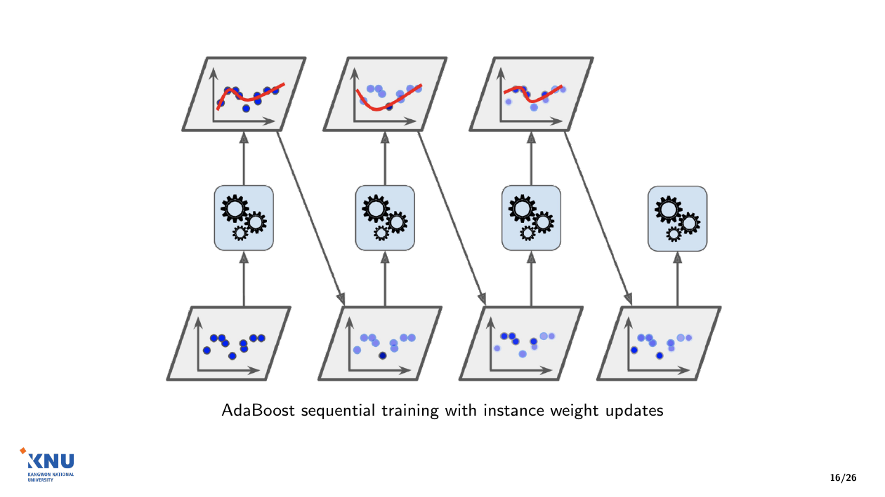
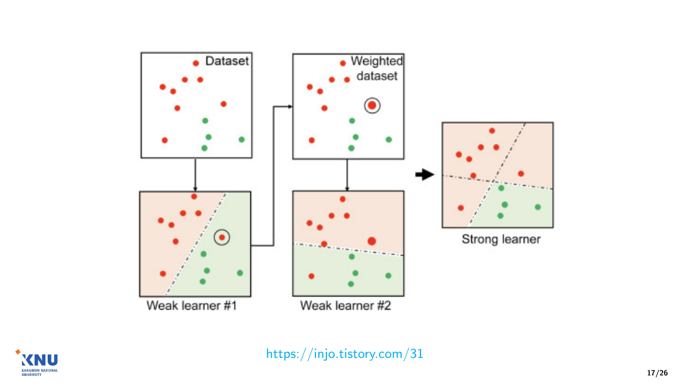
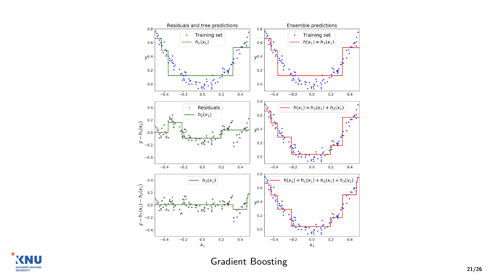
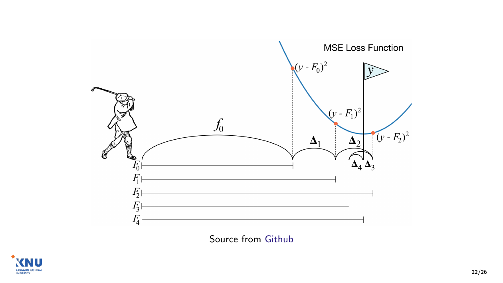
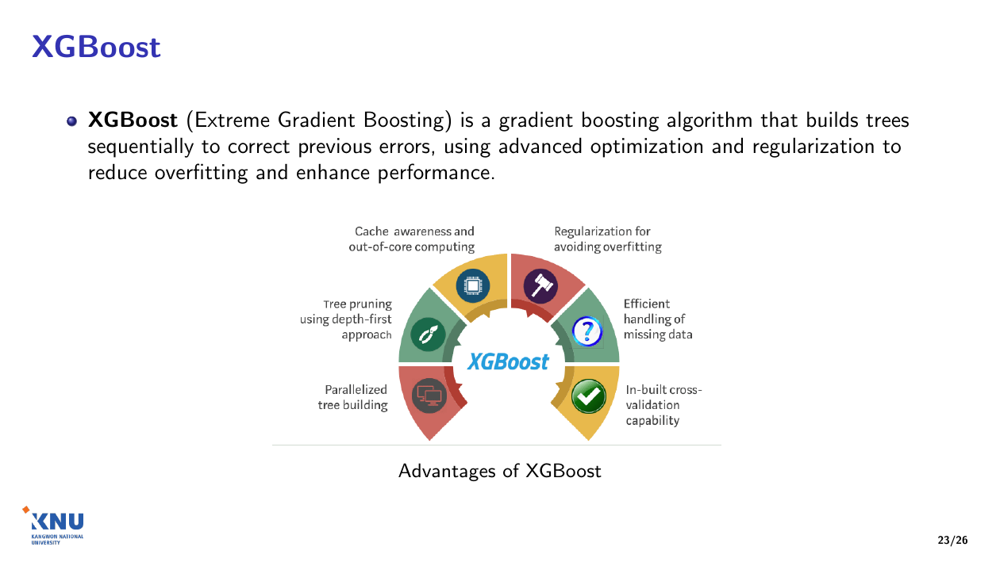
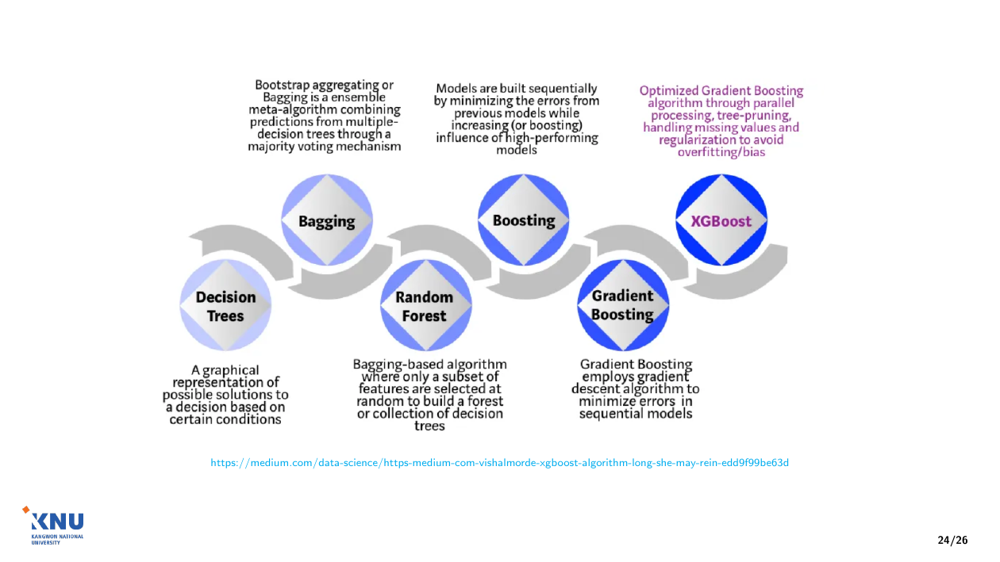
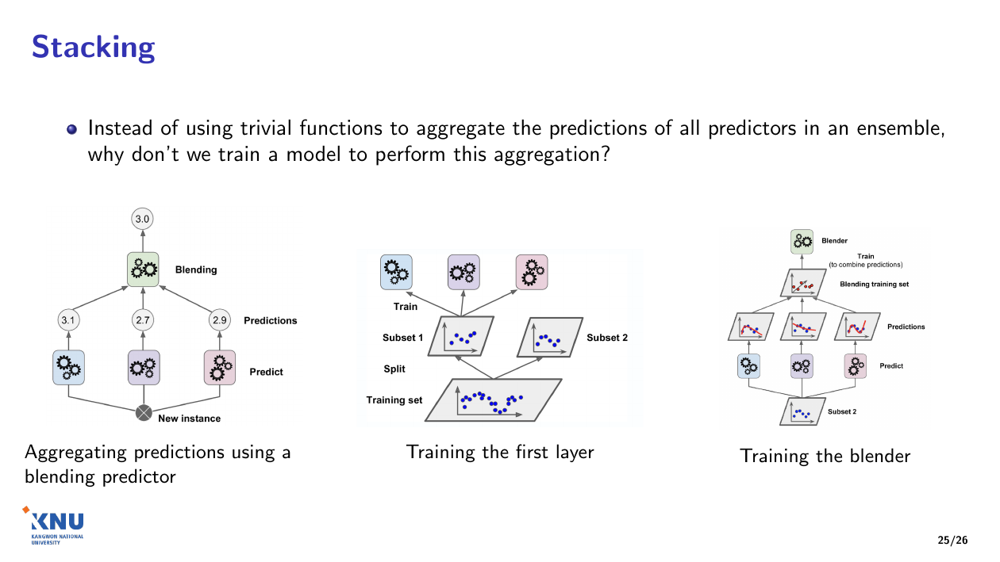

모델 여러 개의 예측을 합쳐
하나보다 정확하게 — 앙상블 학습
이 자료는 앙상블 학습 교안 한 권을 끝까지 담았습니다
"정확도가 그저 그런 모델을 여러 개 만들면, 어떻게 합쳐야 하나보다 나은 모델이 될까?"
하드·소프트 투표, 다수결 정확도 계산, 복원 추출, 분산 감소, 특징 무작위 선택, OOB 순열 중요도
AdaBoost 가중치 계산, 그래디언트 부스팅(잔차 학습), XGBoost, 스태킹, 네 방법 비교
전체 정리, 용어, 교안 확인 필요, 예상 문제(풀이는 눌러서 보기), 단어장
7-2에서 본 결정 트리의 한계(회전·작은 변화에 민감 = 분산이 큼)를 트리를 여러 개 합쳐서 보완하는 단원입니다. 교안 27쪽(Thank You)·28쪽(참고문헌)은 내용이 없어 뺐습니다.
왜 배우고, 어디에 힘을 줄까
단일 모델은 편향이나 분산 중 하나가 크기 쉽습니다. 앙상블은 여러 예측기를 합쳐 분산을 줄이거나(배깅) 편향을 줄여(부스팅, 보충) 일반화 성능을 높입니다. 표 데이터 대회·실무에서 가장 많이 쓰는 모델(랜덤 포레스트, XGBoost)이 모두 여기서 나옵니다.
| 구분 (추측) | 교안 쪽 | 섹션 | 무엇을 할 수 있으면 되나 |
|---|---|---|---|
| 꼭 이해 | 1–5 | 01–04 | 하드 투표(다수결)와 소프트 투표(확률 평균)의 차이. 다수결 정확도를 이항 확률로 계산, 독립이어야 성립 |
| 꼭 이해 | 6–11 | 05–10 | 배깅(복원 추출)·페이스팅(비복원 추출), σ² → σ2K, 랜덤 포레스트 = 배깅 + 특징 무작위 선택 |
| 식의 뜻 | 12–13 | 11 | OOB 샘플, 특징을 섞었을 때 오차가 늘어난 양으로 중요도를 잰다 |
| 계산 연습 | 14–19 | 12–16 | 부스팅 = 순차 학습. AdaBoost의 가중 오차율 r, 예측기 가중치 α, 샘플 가중치 갱신, 가중 다수결 |
| 꼭 이해 | 20–22 | 17–19 | 그래디언트 부스팅 = 잔차에 새 트리를 맞춰 더함 |
| 훑어보기 | 23–26 | 20–23 | XGBoost 장점, 스태킹(블렌더 학습 절차), 네 방법의 장단점 비교 |
이 차시의 필기와 교수님 말씀은 아직 받지 못해 구분은 제 추측입니다. 6주차에 "시험에서 식은 형태를 안내해 준다"고 하셨으니 식은 각 부분의 뜻을 보는 대상으로 읽으면 됩니다.
미리 짚고 갈 1학기 개념 (이산수학)
| 조합 nCk | n개 중 순서 없이 k개를 고르는 경우의 수. 5C3 = 10, 5C4 = 5, 5C5 = 1. "분류기 5개 중 어느 3개가 맞히는가"를 셀 때 씁니다(03). |
| 이항 분포 | 성공 확률 p인 독립 시행을 n번 할 때 성공 횟수 X. P(X = k) = nCk pk(1 − p)n−k. 독립이 전제입니다. |
| 기댓값·분산 성질 | E[aX] = aE[X], Var(aX) = a2Var(X). X, Y가 독립이면 Var(X + Y) = Var(X) + Var(Y). 평균을 내면 분산이 줄어드는 이유(06)가 이 두 줄입니다. |
| 복원·비복원 추출 | 뽑은 것을 다시 넣고 뽑으면 복원(같은 것이 또 나올 수 있음), 넣지 않으면 비복원(05). |
| 자연로그 ln · exp | ln은 밑이 e(≈ 2.718)인 로그, exp(a) = ea. exp(ln 4) = 4처럼 서로 되돌립니다. AdaBoost(15–16)에서 씁니다. |
투표 · 배깅 · 랜덤 포레스트
앙상블 학습 Ensemble Learning
Ensemble learning is a method of combining multiple individual models to create an optimal model with improved generalization.
앙상블 학습은 여러 개의 개별 모델을 결합해, 일반화 성능이 더 좋은 하나의 모델을 만드는 방법입니다. 일반화(generalization) = 학습에 쓰지 않은 새 데이터에서도 잘 맞히는 것.
결합에 쓰이는 개별 모델을 예측기predictor(분류면 분류기)라고 부르고, 합친 전체를 앙상블이라고 부릅니다.
- 투표Voting — 02–04
- 배깅Bagging — 예: 랜덤 포레스트 (05–11)
- 부스팅Boosting — 예: AdaBoost, XGBoost (12–21)
- 스태킹Stacking — 22
교안은 "Bagging (i.e., random forests)"로 적었지만 랜덤 포레스트는 배깅의 한 예이므로 i.e.(즉)가 아니라 e.g.(예)의 뜻입니다.
네 방법을 먼저 한 표로 (보충)
| 방법 | 예측기의 알고리즘 | 각 예측기의 학습 데이터 | 학습 순서 | 예측을 합치는 방법 |
|---|---|---|---|---|
| 투표 | 서로 다름 (로지스틱, SVM, 트리 …) | 같은 학습 세트 전체 | 따로 (병렬) | 다수결 또는 확률 평균 |
| 배깅 | 모두 같음 (주로 결정 트리) | 무작위로 뽑은 서로 다른 부분 집합 | 따로 (병렬) | 다수결(분류) · 평균(회귀) |
| 부스팅 | 모두 같음 (주로 얕은 트리) | 같은 세트, 가중치나 목표값이 매번 바뀜 | 순서대로 | 가중 다수결 · 예측의 합 |
| 스태킹 | 서로 다름 | 학습 세트를 나눠 씀 | 층별로 | 합치는 모델(블렌더)을 학습 |
공통점은 "여러 예측기 + 결합 규칙"입니다. 차이는 무엇을 다르게 해서 다양한 예측기를 얻는가(알고리즘·데이터·가중치)와 어떻게 합치는가입니다.
투표 분류기 Voting Classifier — 서로 다른 분류기 학습
Suppose you have trained a few classifiers, each one achieving about 80% accuracy.
정확도가 약 80%인 분류기를 몇 개 학습시켰다고 합시다. 그림은 같은 학습 데이터(아래 판, ●와 ○ 두 클래스)로 서로 다른 알고리즘의 분류기 네 개를 학습시키는 모습입니다.
- 로지스틱 회귀 (6-1)
- SVM 분류기 (6-2)
- 랜덤 포레스트 분류기 (09)
- 그 밖의 분류기
이것을 다양한 예측기diverse predictors라고 합니다. 알고리즘이 다르면 틀리는 샘플도 서로 달라지기 쉽습니다.
 다시 그린 그림 · 누르면 원본
다시 그린 그림 · 누르면 원본하드 투표 Hard Voting — 가장 많은 표를 받은 클래스
aggregate the predictions of each classifier and predict the class that gets the most votes. Often achieves a higher accuracy than the best classifier in the ensemble.
각 분류기의 예측(클래스)을 모아 가장 많은 표를 받은 클래스를 최종 예측으로 냅니다 = 다수결.
그림 읽기: 새 샘플(New instance) 하나를 네 예측기에 넣었더니 예측이 1, 1, 2, 1. 클래스 1이 3표, 클래스 2가 1표 → 앙상블의 예측 = 1.
이렇게 하면 앙상블 안의 가장 좋은 분류기보다도 정확도가 높은 경우가 많습니다. 왜 그런지가 다음 03입니다.
 다시 그린 그림 · 누르면 원본
다시 그린 그림 · 누르면 원본독립인 분류기 5개, 각 70% → 다수결은 몇 %?
5개가 서로 독립이고 각각 정확도 70%. 다수결이 맞으려면 3개 이상이 맞으면 됩니다. 맞힌 수 X ∼ 이항 분포 B(5, 0.7).
| 맞힌 수 | 경우의 수 | 확률 |
|---|---|---|
| 5개 | 5C5 = 1 | 0.75 = 0.16807 |
| 4개 | 5C4 = 5 | 5 × 0.74 × 0.3 = 0.36015 |
| 3개 | 5C3 = 10 | 10 × 0.73 × 0.32 = 0.30870 |
| 합 | 0.83692 | |
교안 0.8369와 같습니다(Python 검산). 개별 70%보다 약 14%p 높습니다. 계수 5, 10 = "어느 1개가 틀리나" 5가지, "어느 3개가 맞나" 5C3 = 10가지.
확률을 곱할 수 있는 것은 분류기들이 독립이라고 가정했기 때문입니다.

다시 그린 그림 · 누르면 원본분류기가 많아지면 — 그리고 "독립"이라는 조건
| 분류기 수 n | 3 | 5 | 11 | 21 | 101 |
|---|---|---|---|---|---|
| 다수결 정확도 | 0.784 | 0.837 | 0.922 | 0.974 | 0.99999 |
각 70%, 독립, 과반이 맞을 확률(Python 검산). 교안은 101개일 때 "0.99"라고 적었는데 정확히는 0.999987입니다("0.99 이상"이라는 뜻으로는 맞음). n은 동점이 없게 홀수로 잡았습니다.
교안 문장: 각 분류기가 약한 학습기weak learner(무작위 추측보다 조금 나은 정도)여도, 약한 학습기가 충분히 많고 충분히 다양하면 앙상블은 강한 학습기strong learner(높은 정확도)가 될 수 있습니다.
Only true if all classifiers are perfectly independent, making uncorrelated errors, which is clearly not the case since they are trained on the same data
이 계산은 분류기들이 완전히 독립이어서 서로 상관없는 오류를 낼 때만 맞습니다. 실제로는 같은 데이터로 학습하므로 같은 샘플을 함께 틀리는 경향이 있어 이만큼 오르지 않습니다.
그래서 앙상블은 예측기를 서로 다르게(다양하게) 만드는 것이 핵심입니다 — 투표는 알고리즘을, 배깅은 데이터를 다르게 합니다.
개별 정확도가 50%보다 낮으면 반대가 됩니다 (보충)
| 개별 정확도 (101개, 독립) | 다수결 정확도 |
|---|---|
| 0.70 | 0.99999 |
| 0.50 (무작위 추측) | 0.5 |
| 0.45 | 0.156 |
Python으로 계산한 이항 확률 P(X ≥ 51).
다수결은 "맞힐 확률이 더 큰 쪽"을 개수만큼 증폭합니다. 개별 정확도가 0.5보다 크면 1에 가까워지고, 0.5이면 그대로, 0.5보다 작으면 오히려 0에 가까워집니다.
그래서 약한 학습기의 조건이 "무작위 추측보다는 나을 것"입니다. AdaBoost에서 오차율 r이 0.5보다 크면 그 예측기의 가중치가 음수가 되는 것(15)도 같은 이유입니다.
소프트 투표 Soft Voting — 확률을 평균
the predicted class probabilities from each classifier are averaged, and the class with the highest average probability is chosen as the final prediction.
각 분류기가 낸 클래스별 예측 확률을 평균하고, 평균 확률이 가장 높은 클래스를 최종 예측으로 고릅니다.
각 분류기의 확률 출력을 쓰므로 하드 투표보다 더 정교한more refined 방법입니다. "51% 확신"과 "99% 확신"을 하드 투표는 똑같이 한 표로 세지만, 소프트 투표는 다르게 반영합니다.
확률을 내지 못하는 분류기는 그대로 쓸 수 없습니다. 예: scikit-learn의 SVC는 probability=True로 설정해야 확률을 냅니다(보충).
| 분류기 | P(A) | P(B) | 하드 투표의 한 표 |
|---|---|---|---|
| 1 | 0.9 | 0.1 | A |
| 2 | 0.4 | 0.6 | B |
| 3 | 0.4 | 0.6 | B |
| 평균 | 0.567 | 0.433 |
하드 투표: B 2표 → B. 소프트 투표: A의 평균 확률 0.9 + 0.4 + 0.43 ≈ 0.567 → A. 분류기 1의 강한 확신이 반영된 결과입니다.
배깅과 페이스팅 Bagging and Pasting
use the same training algorithm for every predictor, but to train them on different random subsets of the training set.
투표와 반대로, 모든 예측기에 같은 학습 알고리즘을 쓰고 학습 세트에서 무작위로 뽑은 서로 다른 부분 집합으로 각각 학습시킵니다.
| 배깅Bagging | 복원 추출with replacement — 부트스트랩bootstrapping |
| 페이스팅Pasting | 비복원 추출without replacement |
그림: 학습 세트 → 무작위 추출로 부분 집합 4개 → 각각 같은 종류의 예측기(같은 색 상자)를 학습. 배깅은 Bootstrap AGGregatING의 줄임말입니다(교안 24쪽).
 다시 그린 그림 · 누르면 원본
다시 그린 그림 · 누르면 원본복원 추출과 비복원 추출을 직접 (보충)
학습 샘플 5개 {A, B, C, D, E}에서 부분 집합을 뽑는 예입니다.
| 배깅 (5개를 복원 추출) | 페이스팅 (3개를 비복원 추출) | |
|---|---|---|
| 예측기 1 | {A, A, C, D, E} | {A, C, D} |
| 예측기 2 | {B, C, C, E, E} | {B, D, E} |
| 예측기 3 | {A, B, B, D, D} | {A, B, E} |
배깅은 원래 크기만큼 뽑아도 중복이 생기고 뽑히지 않은 샘플이 생겨 집합마다 달라집니다. 페이스팅은 중복이 없으므로 원래보다 작게 뽑아야 집합이 달라집니다.
n개에서 n번 복원 추출할 때 특정 샘플이 한 번도 안 뽑힐 확률은 (1 − 1n)n. n = 10이면 0.349, n = 1000이면 0.368, n이 커지면 1e ≈ 0.368에 가까워집니다. 즉 예측기마다 학습 샘플의 약 63.2%만 쓰고 약 36.8%는 쓰지 않습니다.
scikit-learn에서는 BaggingClassifier(bootstrap=True)가 배깅, bootstrap=False가 페이스팅입니다. 예측기들이 서로 독립적으로 학습되므로 병렬로 학습할 수 있습니다(교안 26쪽 비교표).
배깅은 왜 분산을 줄이나? Why Bagging Lowers Variance?
the ensemble has a similar bias but a lower variance than a single predictor trained on the original training set.
결과적으로 앙상블은 원래 학습 세트로 학습한 예측기 하나와 비교해 편향은 비슷하고 분산은 더 낮습니다.
교안의 설명: 확률 변수 x ∼ N(μ, σ2)를 측정합니다. 한 번만 측정하면
E[x1] = μ , Var(x1) = σ2
K번 측정해 평균을 내면 기댓값은 그대로 μ이고 분산은 K분의 1이 됩니다.
E[x1 + x2 + ⋯ + xKK] = μ
Var(x1 + x2 + ⋯ + xKK) = Kσ2K2 = σ2K
한 줄씩: Var(aX) = a2Var(X)이므로 1K이 밖으로 나오며 1K2. 각 x가 독립이면 합의 분산 = 분산의 합 = Kσ2.
대응: xk = k번째 예측기의 예측, 평균 = 배깅의 결합(회귀). 편향(기댓값)은 그대로, 분산은 줄어듦.
교안은 본문·분자에서 소문자 k, 분모에서 대문자 K를 섞어 썼습니다. 같은 값(측정 횟수 = 예측기 수)입니다.
σ²/K는 독립일 때만 — 예측기끼리 상관이 있으면
Var(x1 + ⋯ + xK) = Kσ2은 x들이 서로 독립일 때만 성립합니다. 배깅의 예측기들은 같은 학습 세트에서 뽑은 비슷한 데이터로 학습하므로 예측이 서로 상관되어 있습니다(03의 경고문과 같은 이야기).
두 예측기 사이 상관계수가 모두 ρ이면 평균의 분산은 (보충)
ρσ2 + 1 − ρKσ2
K를 아무리 늘려도 ρσ2 아래로는 줄지 않습니다. 예: σ2 = 1, K = 100이면 독립(ρ = 0)일 때 0.01, ρ = 0.5이면 0.505.
분산을 더 줄이려면 예측기 수 K만 늘릴 것이 아니라 예측기끼리의 상관 ρ를 낮춰야 합니다.
랜덤 포레스트가 노드마다 특징을 무작위로 일부만 보게 하는 이유가 이것입니다(09). 트리들이 서로 더 달라져 ρ가 낮아집니다.
[복습] 편향과 분산 Bias and Variance
6-2에서 본 그림입니다. 과녁 2 × 2 그림이 나타내는 것:
- 과녁 중심 = 맞혀야 할 참값
- 점 하나 = 학습 데이터를 바꿔 가며 학습한 모델 하나의 예측
- 편향 = 점들의 평균이 중앙에서 떨어진 정도 (아래 줄 = 높음)
- 분산 = 점들이 흩어진 정도 (오른쪽 열 = 높음)
깊은 결정 트리는 오른쪽 위(편향 낮음·분산 높음)에 해당합니다. 배깅은 평균의 위치는 두고 흩어짐을 줄여 오른쪽 위 → 왼쪽 위로 옮기는 방법입니다.
부스팅은 반대로 편향이 큰 약한 학습기(아래 줄)에서 출발해 편향을 줄여 갑니다(12, 보충).

다시 그린 그림 · 누르면 원본결정 트리 하나 vs 트리 500개 배깅

다시 그린 그림 · 누르면 원본초승달 모양 두 클래스가 가운데서 겹치는 데이터입니다. 왼쪽(트리 하나): 축에 평행한 선분으로 된 경계가 겹침 영역의 점 하나하나를 따라가 작은 직사각형 섬이 많이 생깁니다 = 과대적합, 분산 큼.
오른쪽(배깅 500개): 경계가 훨씬 매끄럽고 섬이 거의 없습니다. 학습 데이터에서 틀리는 개수는 비슷한 수준이지만(편향 비슷) 경계가 덜 불규칙합니다(분산 작음) → 새 데이터에 더 잘 일반화됩니다.
랜덤 포레스트 Random Forest
A random forest is an ensemble of decision trees, generally trained via the bagging method (or sometimes pasting).
랜덤 포레스트는 결정 트리의 앙상블이고, 보통 배깅(가끔 페이스팅)으로 학습합니다.
instead of searching for the very best feature when splitting a node, it searches for the best feature among a random subset of features.
여기에 무작위성을 하나 더 넣습니다. 노드를 나눌 때 모든 특징 중 최선을 찾지 않고, 무작위로 고른 특징 일부 중에서 최선을 찾습니다.
7-2의 CART는 노드마다 모든 특징을 비교했습니다. 랜덤 포레스트의 트리는 노드마다 일부 특징만 후보로 삼습니다. 분류에서는 보통 √(특징 수)개 정도를 씁니다(보충).
This results in a greater tree diversity, which (once again) trades a higher bias for a lower variance
트리들이 더 다양해집니다. 각 트리는 최선의 특징을 못 쓸 때가 있어 편향이 조금 높아지지만, 트리끼리 상관이 낮아져 평균의 분산이 더 낮아지고(06의 ρ), 대체로 전체적으로 더 좋은 모델이 됩니다.
트리 수백 개 = 배깅(데이터 무작위) + 특징 무작위.
랜덤 포레스트의 또 다른 장점 — 특징 중요도
they make it easy to measure the relative importance of each feature.
각 특징이 예측에 얼마나 중요한지(상대적 중요도)를 쉽게 잴 수 있습니다.
Measures a feature's importance by looking at how much the tree nodes that use that feature reduce impurity on average (across all trees in the forest).
어떤 특징의 중요도 = 그 특징을 쓴 노드들이 불순도를 평균적으로 얼마나 줄였나를 숲의 모든 트리에 걸쳐 본 값입니다.
7-2의 지니 감소량 ΔG를 떠올리면 됩니다. 트리마다 "특징 j로 나눈 노드들의 ΔG(그 노드 샘플 수로 가중)"를 모으고, 모든 트리에 걸쳐 평균을 냅니다(보충 — scikit-learn의 feature_importances_가 이 방식).
교안 12–13쪽은 다른 방법인 OOB 순열 중요도를 설명합니다(11).
랜덤 포레스트가 예측하는 과정
- 테스트 샘플 하나를 모든 트리(Tree 1 … Tree 600)에 넣습니다.
- 트리마다 루트에서 조건을 따라 내려가 리프 하나에 도착합니다(진한 노드 = 지나간 경로). 트리마다 경로가 다릅니다.
- 각 리프의 값이 트리별 예측(Prediction 1 … 600)입니다.
- 모든 예측을 평균해(Average All Predictions) 최종 예측을 냅니다.
그림의 "평균"은 회귀일 때입니다. 분류에서는 다수결(하드 투표)이나 클래스 확률 평균(소프트 투표)으로 합칩니다(보충).
 다시 그린 그림 · 누르면 원본
다시 그린 그림 · 누르면 원본랜덤 포레스트 변수 중요도 — OOB 순열 방법
OOB 샘플Out-of-Bag: 부트스트랩 추출에서 뽑히지 않은 학습 샘플. 트리마다 약 36.8%(05)이고, 그 트리는 이 샘플들을 보지 않았으므로 검증 데이터처럼 쓸 수 있습니다.
- 원래 데이터로 OOB 오차를 구한다 (e).
- 특징 xi의 값만 샘플끼리 무작위로 뒤섞은(permute) 데이터로 OOB 오차를 구한다 (pi).
- 모든 트리에서 (pi − e)를 구해 평균과 표준편차로 중요도를 계산한다.
특징 xi의 열만 섞으면 값의 분포는 그대로인데 정답 y와의 관계만 끊깁니다. 그 특징에 의존하던 트리는 예측이 나빠집니다.
오차가 많이 늘면 → 중요한 특징. 거의 그대로면 → 예측에 거의 안 쓰인 특징.
교안 1단계의 "(ei)"는 첨자 i가 붙었지만, 원래 데이터의 OOB 오차는 특징과 무관하므로 e입니다(다음 쪽 식도 e(t)로 i 없이 씀).
중요도 점수 식과 계산 예
A feature is important if randomizing it on OOB data consistently increases the prediction error.
OOB 데이터에서 그 특징을 무작위로 섞었을 때 오차가 일관되게 늘면 중요한 특징입니다. 트리 t, 특징 i에 대해
e(t) = 원래 OOB 오차, pi(t) = 특징 i를 섞은 뒤 OOB 오차
di(t) = pi(t) − e(t) (오차가 늘어난 양)
d̄i = 1T∑t=1T di(t) si2 = 1T − 1∑t=1T(di(t) − d̄i)2
중요도 vi = d̄isi
읽는 법: d̄ = 트리 T개에서 오차 증가량의 평균, s = 그 표준편차(분모 T − 1인 표본 표준편차). 평균이 크고 트리마다 고르게 늘수록(s 작음) v가 커집니다 — "일관되게"가 s로 나누는 이유입니다.
d = (0.05, 0.07, 0.04, 0.06)
d̄ = 0.224 = 0.055
s2 = 0.0052 + 0.0152 + 0.0152 + 0.00523
= 0.00053, s ≈ 0.0129
v = 0.0550.0129 ≈ 4.26 (Python 검산)
부스팅 · 스태킹
부스팅 Boosting — 앞 예측기의 잘못을 순서대로 고친다
Boosting refers to any ensemble methods that can combine several weak learners into a strong learner.
부스팅은 약한 학습기 여러 개를 결합해 강한 학습기를 만드는 앙상블 방법을 통틀어 부르는 이름입니다.
train predictors sequentially, each trying to correct its predecessor.
대부분의 부스팅은 예측기를 순서대로sequentially 학습시키고, 각 예측기는 바로 앞 예측기predecessor의 잘못을 고치려고 합니다.
종류: AdaBoost(13–16), 그래디언트 부스팅(17–19), XGBoost(20–21) 등.
| (보충) | 배깅 | 부스팅 |
|---|---|---|
| 학습 순서 | 서로 독립 → 병렬 가능 | 앞 결과를 보고 다음을 학습 → 순차 |
| 주로 줄이는 것 | 분산 | 편향 (약한 학습기에서 출발) |
| 기본 예측기 | 깊은 트리 (분산 큼) | 얕은 트리 (편향 큼) |
| 결합 | 똑같은 비중의 다수결·평균 | 가중 다수결(AdaBoost) · 합(그래디언트) |
AdaBoost Adaptive Boosting — 틀린 샘플에 가중치를
Pay more attention to training instances that were underfitted. New predictors increasingly focus on hard cases.
앞 예측기가 잘 맞히지 못한(과소적합된) 학습 샘플에 더 주의를 기울입니다. 그래서 새 예측기일수록 어려운 샘플에 점점 더 집중합니다.
"주의를 기울인다"는 것은 정확히 샘플마다 가중치 w(i)를 두고, 틀린 샘플의 가중치를 키운 뒤 그 가중치를 반영해 다음 예측기를 학습한다는 뜻입니다(가중치가 큰 샘플을 틀리면 오차가 더 크게 계산됨).
학습 과정 Training process
- 기본 분류기(예: 결정 트리)를 학습 세트로 학습
- 잘못 분류한 샘플의 가중치를 높임
- 갱신된 가중치로 다음 분류기를 학습
- 반복하고, 모든 분류기를 하나의 앙상블로 결합
2단계에서 "얼마나" 높이는지, 4단계에서 "어떻게" 결합하는지가 15–16의 식입니다. 기본 분류기로는 깊이 1짜리 트리(스텀프)를 흔히 씁니다(보충).
AdaBoost의 순차 학습 그림

다시 그린 그림 · 누르면 원본아래 줄 = 단계마다의 학습 데이터, 점의 진하기 = 샘플 가중치. 첫 데이터는 모든 점이 같은 진하기(w(i) = 1m). 다음 데이터부터는 직전 예측기가 틀린 점이 진하고 맞힌 점은 흐립니다.
가운데 줄 = 예측기(모두 같은 알고리즘). 위 줄 = 예측기의 결과(곡선 = 학습된 예측). 대각선 화살표 = 그 결과로 가중치를 갱신해 다음 단계 데이터로 넘김. 앞 단계가 끝나야 다음을 학습할 수 있어 병렬로 할 수 없습니다.
약한 학습기 둘로 강한 학습기 만들기
- Dataset: 한 클래스 8개, 다른 클래스 4개. 처음엔 모두 같은 크기(같은 가중치).
- Weak learner #1: 대각선 경계 하나. 다른 클래스 영역에 들어간 점 1개를 틀림(동그라미).
- Weighted dataset: 그 점이 크게 그려짐 = 가중치 증가.
- Weak learner #2: 큰 점을 맞히는 쪽으로 거의 수평인 경계. 대신 왼쪽 아래 점 1개를 틀림.
- Strong learner: 두 경계를 결합 → 오른쪽 아래만 클래스 B, 12개 모두 맞힘.

다시 그린 그림 · 누르면 원본그림의 "점이 커진다"를 숫자로 (보충)
15–16의 식을 그림에 적용합니다(η = 1, 자연로그).
| 단계 | 값 |
|---|---|
| 처음 가중치 | 12개 모두 112 |
| 학습기 #1의 가중 오차율 | r1 = 112 ≈ 0.083 (1개 틀림) |
| 학습기 #1의 가중치 | α1 = ln 1 − r1r1 = ln 11 ≈ 2.398 |
| 틀린 점 가중치 | 112 × exp(α1) = 1112 |
| 정규화 후 | 틀린 점 0.5, 나머지 11개 각 122 ≈ 0.045 |
틀린 점 하나가 나머지 11개를 합친 만큼(11배) 무거워졌습니다. 그림에서 그 점이 크게 그려진 이유입니다.
이 가중치로 보면 학습기 #1의 가중 오차율은 정확히 0.5(무작위 수준)가 됩니다. 그래서 학습기 #2는 #1과 같은 경계를 그어서는 안 되고, #1이 틀린 점을 맞히는 쪽으로 학습됩니다.
"정확히 0.5"는 η = 1이고 log가 자연로그일 때 나오는 성질입니다(16에서 일반적으로 보임). 1 − r1r1 = 11이므로 exp(α1) = 11입니다.
가중 오차율 rj와 예측기 가중치 αj
샘플마다 처음 가중치 w(i) = 1m (m = 학습 샘플 수). j번째 예측기를 학습한 뒤 가중 오차율weighted error rate을 구합니다.
rj = ∑i=1m w(i) 𝟏(ŷj(i) ≠ y(i))∑i=1m w(i)
- ŷj(i) = j번째 예측기가 i번째 샘플에 낸 예측
- 𝟏(조건) = 조건이 참이면 1, 거짓이면 0 → 분자 = 틀린 샘플들의 가중치 합
- 분모 = 전체 가중치 합 (정규화돼 있으면 1)
가중치가 모두 같으면 rj는 그냥 "틀린 개수 ÷ 전체 개수"(오분류율)입니다.
αj = η log 1 − rjrj
- η = 학습률learning rate — α 전체 크기를 조절
- 예측기가 정확하면(r 작음) α가 큼 → 최종 투표에서 발언권이 큼
- 무작위 추측보다 나쁘면(r > 0.5) α < 0
log의 밑을 교안은 적지 않았습니다. 이 자료는 자연로그(ln)로 계산했습니다 — AdaBoost 원 논문과 scikit-learn이 자연로그를 쓰고, 16의 갱신식 exp(α)와 짝이 맞습니다.
r에 따라 α가 어떻게 변하나 (η = 1, 자연로그)
| r | 1 − rr | α | 뜻 |
|---|---|---|---|
| 0.1 | 9 | 2.197 | 정확 → 큰 발언권 |
| 0.2 | 4 | 1.386 | |
| 0.3 | 73 | 0.847 | |
| 0.5 | 1 | 0 | 무작위 추측 → 발언권 없음 |
| 0.6 | 23 | −0.405 | 반대로 투표하는 셈 |
| 0.9 | 19 | −2.197 |
Python 검산. r = 0.1과 0.9의 α는 부호만 다릅니다.
r = 0.5이면 1 − rr = 1, log 1 = 0입니다. 클래스가 둘일 때 0.5는 동전 던지기 수준이므로 그 예측기의 의견은 쓸모가 없습니다.
이 "0.5 = 무작위"는 이진 분류 기준입니다. 클래스가 K개면 무작위 정확도는 1K이라, scikit-learn의 다중 클래스 AdaBoost(SAMME)는 α에 log(K − 1)을 더합니다(보충). 교안 식은 K = 2인 경우와 같습니다.
샘플 가중치 갱신과 반복
| j번째 예측기가 샘플 i를 | 새 가중치 w(i) |
|---|---|
| 맞힘 (ŷj(i) = y(i)) | w(i) (그대로) |
| 틀림 (ŷj(i) ≠ y(i)) | w(i) · exp(αj) |
- 맞힌 샘플은 그대로, 틀린 샘플만 exp(αj)배. α가 클수록(정확한 예측기가 틀린 샘플일수록) 더 크게 키웁니다.
- 그다음 모든 가중치를 합이 1이 되도록 정규화합니다 (∑i=1m w(i) = 1). 결과적으로 맞힌 샘플의 비중은 줄어듭니다.
- 갱신된 가중치로 새 예측기를 학습
- 원하는 예측기 수에 도달하거나 완벽한 예측기(r = 0)를 찾을 때까지 반복
η = 1이면 exp(α) = 1 − rr. 틀린 쪽 가중치 합 r은 r · 1 − rr = 1 − r이 되어 맞힌 쪽 합 1 − r과 같아집니다. 그래서 새 가중치로 보면 직전 예측기는 정확히 반을 틀리는 예측기가 되고, 다음 예측기는 다른 경계를 찾게 됩니다.
AdaBoost 한 바퀴를 손으로 (보충)
샘플 10개, η = 1. 첫 예측기가 1·2번 샘플을 틀렸습니다.
| 단계 | 계산 | 결과 |
|---|---|---|
| 처음 가중치 | 1m = 110 | 모두 0.1 |
| 가중 오차율 | 0.1 + 0.11 | r1 = 0.2 |
| 예측기 가중치 | ln 0.80.2 = ln 4 | α1 ≈ 1.386 |
| 틀린 샘플 갱신 | 0.1 × exp(ln 4) = 0.1 × 4 | 0.4 (두 개) |
| 합 | 8 × 0.1 + 2 × 0.4 | 1.6 |
| 정규화 (÷ 1.6) | 틀린 샘플 0.41.6, 맞힌 샘플 0.11.6 | 0.25 · 0.0625 |
Python 검산. 틀린 두 샘플의 가중치 합 0.5 = 맞힌 여덟 샘플의 합 0.5.
- r = 틀린 샘플 가중치 합 ÷ 전체 합
- α = η ln 1 − rr
- 틀린 샘플만 × exp(α)
- 전체 합으로 나눠 정규화
- 새 가중치로 다음 예측기 학습
최종 예측 — 가중 다수결 Weighted majority vote
ŷ(x) = arg maxk ∑j=1, ŷj(x)=kN αj
- N = 예측기 수, k = 클래스 번호
- 각 클래스 k마다 k라고 예측한 예측기들의 α를 더하고, 합이 가장 큰 클래스를 고릅니다.
- 하드 투표(02)에서 한 표 = 1이던 것을 한 표 = αj로 바꾼 것입니다.
| 예측기 | α | 예측 |
|---|---|---|
| 1 | 1.2 | 클래스 0 |
| 2 | 0.8 | 클래스 1 |
| 3 | 0.6 | 클래스 1 |
클래스 0: 1.2, 클래스 1: 0.8 + 0.6 = 1.4 → ŷ = 1 (단순 다수결과 같음).
예측기 1의 α가 1.5였다면 1.5 > 1.4 → ŷ = 0. 표 수는 적어도 정확한 예측기 하나가 이길 수 있습니다.
그래디언트 부스팅 Gradient Boosting
많이 쓰이는 부스팅 알고리즘입니다. AdaBoost처럼 예측기를 순서대로 추가하고, 새 예측기는 앞 예측기의 오류를 고칩니다.
Instead of adjusting instance weights, gradient boosting fits the new predictor to the residual errors made by the previous one.
다른 점: 샘플 가중치를 조정하는 대신, 새 예측기를 앞 예측기가 남긴 잔차residual errors에 맞춰 학습합니다. 잔차 = 정답 − 지금까지의 예측(y − ŷ).
회귀, 분류, 순위 매기기ranking 등 여러 문제에 쓸 수 있습니다.
| AdaBoost | 그래디언트 부스팅 | |
|---|---|---|
| 다음 예측기가 보는 것 | 같은 (x, y), 샘플 가중치만 바뀜 | 같은 x, 목표가 잔차로 바뀜 |
| 결합 | α로 가중 다수결 | 예측을 더함 |
| 틀린 샘플을 다루는 방식 | 가중치를 키워 다시 맞히게 | 남은 차이 자체를 예측하게 |
잔차에 트리를 하나씩 더해 가는 그림
점 = 학습 데이터(U자 모양 회귀 문제). 각 트리는 리프가 4개인 회귀 트리라 예측이 4단 계단입니다(원출처 설정은 깊이 2, 보충 · 7-2의 회귀 트리).
| 왼쪽 열: 잔차와 트리 예측 | 오른쪽 열: 앙상블 예측 | |
|---|---|---|
| 1행 | h1이 y 자체를 학습 | h = h1 |
| 2행 | 잔차 y − h1에 h2를 학습 | h = h1 + h2 |
| 3행 | 잔차 y − h1 − h2에 h3를 학습 | h = h1 + h2 + h3 |
아래로 갈수록 잔차는 0 근처로 줄고, 앙상블 예측은 계단이 잘게 나뉘어 U자 곡선에 점점 가까워집니다. 앙상블의 예측 = 트리 예측의 합.

다시 그린 그림 · 누르면 원본그래디언트 부스팅을 손으로 (보충)
7-2에서 쓴 점 4개 (x, y) = (1, 1), (2, 2), (3, 6), (4, 7). 첫 예측 F0 = y의 평균 = 4, 예측기는 깊이 1 회귀 트리, 학습률 1.
| x | 1 | 2 | 3 | 4 | MSE |
|---|---|---|---|---|---|
| y | 1 | 2 | 6 | 7 | |
| F0 | 4 | 4 | 4 | 4 | 6.5 |
| 잔차 y − F0 | −3 | −2 | 2 | 3 | |
| h1 (x ≤ 2.5로 나눔) | −2.5 | −2.5 | 2.5 | 2.5 | |
| F1 = F0 + h1 | 1.5 | 1.5 | 6.5 | 6.5 | 0.25 |
| 잔차 y − F1 | −0.5 | 0.5 | −0.5 | 0.5 | |
| h2 (x ≤ 1.5로 나눔) | −0.5 | 0.167 | 0.167 | 0.167 | |
| F2 = F1 + h2 | 1 | 1.667 | 6.667 | 6.667 | 0.167 |
Python 검산. h2는 x ≤ 1.5와 x ≤ 3.5의 J가 같아(0.167) 앞의 것을 골랐습니다.
h1은 y가 아니라 잔차를 학습해, 리프 값 = 그 구간 잔차의 평균(−2.5, 2.5)입니다(7-2: 리프 = 평균).
예측은 앞 예측 + 새 트리의 보정으로 누적됩니다. MSE가 6.5 → 0.25 → 0.167로 줄어듭니다.
교안 21쪽 그림은 F0 없이 h1이 y를 바로 학습하는 형태이고, 22쪽 골프 그림은 첫 예측 f0에서 출발합니다. 둘 다 "첫 예측 → 잔차 보정을 계속 더함"으로 같습니다.
골프 그림이 나타내는 것
| 그림 | 뜻 |
|---|---|
| 깃발 y | 목표값(정답) |
| 막대 F0, F1, …, F4 | m단계까지의 누적 예측 (막대 길이 = 예측값) |
| f0 | 첫 예측 |
| Δ1, Δ2, … | 각 단계에서 더하는 보정 = 새 트리의 예측. Fm = Fm−1 + Δm |
| 포물선 | MSE 손실 (y − F)2을 F의 함수로 그린 것, 바닥 = F가 y일 때 |
| 곡선 위 점 | 각 단계의 손실 (y − F0)2 > (y − F1)2 > (y − F2)2 (그림에 표시된 세 점) |
F2는 y를 지나치고(Δ2가 너무 큼), Δ3은 음수로 되돌아오며, Δ4로 y에 거의 맞습니다.

다시 그린 그림 · 누르면 원본왜 이름이 "그래디언트" 부스팅인가 (보충)
손실을 L = 12(y − F)2로 두고 지금 예측 F에 대해 미분하면
−∂L∂F = y − F = 잔차
손실을 줄이는 방향(음의 기울기, negative gradient)이 바로 잔차입니다. 잔차에 트리를 맞춰 더하는 것은 손실 곡선을 따라 바닥(y) 쪽으로 한 걸음씩 내려가는 경사 하강법과 같은 일입니다.
교안 24쪽의 "Gradient Boosting employs gradient descent algorithm to minimize errors"가 이 뜻입니다. 경사 하강법은 매개변수를 움직이지만, 그래디언트 부스팅은 예측값 F를 움직입니다.
MSE가 아닌 다른 손실(분류용 등)을 쓰면 음의 기울기가 잔차와 다른 모양이 되고, 트리는 그 음의 기울기를 학습합니다. 그래서 회귀·분류·순위에 모두 쓸 수 있습니다.
학습률(learning rate)을 1보다 작게 하면 Δ를 줄여서 더해 F2처럼 지나치는 일을 줄입니다(scikit-learn 기본값 0.1).
XGBoost Extreme Gradient Boosting
트리를 순서대로 만들어 앞의 오류를 고치는 그래디언트 부스팅인데, 고급 최적화와 규제regularization로 과대적합을 줄이고 성능을 높인 알고리즘입니다.
| 장점 (그림 6조각) | 뜻 (보충) |
|---|---|
| Parallelized tree building | 트리 하나를 만들 때 분할 후보 계산을 병렬로 |
| Tree pruning using depth-first approach | 깊이 우선으로 키운 뒤 이득 없는 가지를 잘라냄 |
| Cache awareness and out-of-core computing | 캐시를 고려한 메모리 사용, 메모리보다 큰 데이터는 디스크로 나눠 처리 |
| Regularization for avoiding overfitting | 규제로 과대적합 방지 |
| Efficient handling of missing data | 결측값을 효율적으로 처리 |
| In-built cross-validation capability | 교차 검증 기능 내장 |

다시 그린 그림 · 누르면 원본결정 트리에서 XGBoost까지의 발전

다시 그린 그림 · 누르면 원본| 결정 트리 | 조건에 따라 결정의 가능한 해를 그래프(트리)로 나타낸 것 (7-2) |
| 배깅 | 부트스트랩 집계(Bootstrap aggregating). 여러 결정 트리의 예측을 다수결로 결합하는 앙상블 메타 알고리즘 |
| 랜덤 포레스트 | 배깅 기반, 특징 일부만 무작위로 골라 트리들의 숲을 만듦 |
| 부스팅 | 앞 모델의 오류를 줄이도록 모델을 순서대로 만들고, 성능 좋은 모델의 영향력을 키움(boosting) |
| 그래디언트 부스팅 | 경사 하강법으로 순차 모델들의 오류를 최소화 |
| XGBoost | 병렬 처리, 가지치기, 결측값 처리, 규제로 최적화한 그래디언트 부스팅 |
스태킹 Stacking — 합치는 방법까지 학습
Instead of using trivial functions to aggregate the predictions of all predictors in an ensemble, why don't we train a model to perform this aggregation?
다수결·평균 같은 단순한 함수로 예측을 합치는 대신, 예측을 합치는 일 자체를 모델로 학습시킵니다.
예측할 때(그림 위): 새 샘플을 첫 층 예측기 셋에 넣어 3.1, 2.7, 2.9가 나오면, 이 세 값을 입력으로 받는 블렌더blender(메타 학습기)가 최종 예측 3.0을 냅니다.
세 값의 단순 평균은 2.9입니다. 3.0은 블렌더가 학습한 결합 방식으로 낸 값이라는 것을 보여 줍니다.

다시 그린 그림 · 누르면 원본스태킹의 학습 순서 — 첫 층, 그다음 블렌더
- 학습 세트를 Subset 1과 Subset 2(홀드아웃)로 나눔
- 첫 층 학습: Subset 1로 예측기 셋을 학습
- 첫 층 예측기로 Subset 2를 예측 → 샘플마다 예측값 3개
- 블렌딩 학습 세트: 입력 = 예측값 3개, 정답 = Subset 2의 실제 y
- 블렌더 학습: 이 세트로 "예측값 3개 → 최종 예측"을 학습
첫 층이 학습에 쓴 데이터에 대한 예측은 실제보다 훨씬 정확하게 나옵니다(이미 본 데이터). 이걸로 블렌더를 학습시키면 블렌더가 "첫 층은 늘 정확하다"고 배워, 새 데이터에서 틀립니다.
그래서 첫 층이 보지 않은 Subset 2의 예측으로 블렌더를 학습시킵니다. 교안 26쪽 비교표의 "데이터 분할 전략을 신중히 정해야 한다"가 이 부분입니다.
앙상블 방법 비교 Comparison of Ensemble Methods
| 방법 | 장점 | 한계 |
|---|---|---|
| 투표 | 서로 다른 알고리즘을 결합해 서로의 약점을 보완. 구현이 간단하고 빨리 시도해 볼 수 있음 | 기본 모델들의 품질 차이가 크면 약한 모델이 전체 성능을 끌어내릴 수 있음 |
| 배깅 | 분산이 큰 학습기의 분산을 낮춰 과대적합 방지. 병렬 학습이 효율적 | 편향이 큰 학습기에는 효과가 제한적. 모든 모델이 같은 기본 알고리즘이라 같은 귀납적 편향을 공유 |
| 부스팅 | 오류에 순서대로 집중해 고침. 복잡한 패턴을 잡고 높은 정확도 가능 | 잡음·이상치에 민감, 과대적합 위험. 학습 시간과 튜닝이 복잡할 수 있음 |
| 스태킹 | 서로 보완하는 모델을 활용해 높은 성능. 메타 학습기가 일반화를 개선할 수 있음 | 메타 모델과 데이터 분할 전략을 신중히 골라야 함. 구조가 복잡하고 구현이 어려움 |
비교표의 장단점이 나오는 이유
| 표의 문장 | 이유 (앞 섹션과 연결) |
|---|---|
| 배깅은 분산이 큰 학습기에 효과 | 평균의 분산 = σ2K, 기댓값(편향)은 그대로(06). 그래서 편향이 큰 학습기에는 효과가 작음. |
| 배깅은 병렬 학습 / 부스팅은 학습 시간이 김 | 배깅 예측기는 서로 독립이고, 부스팅은 앞 결과가 있어야 다음을 학습(13). |
| 배깅 모델들이 같은 귀납적 편향 공유 | 귀납적 편향inductive bias = 알고리즘이 가진 가정(예: 트리는 축에 평행한 경계). 알고리즘이 하나라 그 가정의 한계도 같이 가짐. |
| 부스팅은 잡음·이상치에 민감 | 잘못 라벨링된 샘플은 계속 틀리므로 가중치가 계속 커져(16), 뒤 예측기들이 잡음을 맞히는 데 집중함. |
| 투표는 약한 모델이 끌어내림 | 한 표 = 1이라 품질이 낮은 모델도 같은 발언권(03의 0.5 미만 예). |
앙상블 학습 전체 정리 — 말로 설명할 수 있게
- 앙상블 = 여러 예측기를 결합해 일반화 성능을 높임. 핵심은 예측기를 서로 다르게 만드는 것(알고리즘·데이터·특징·가중치).
- 투표: 하드 = 다수결, 소프트 = 클래스 확률 평균. 70% 독립 분류기 5개 다수결 = 0.83692, 101개 ≈ 0.99999 — 독립일 때만.
- 배깅(복원 추출)·페이스팅(비복원): 같은 알고리즘, 다른 부분 집합. 편향 비슷, 분산 ↓ (독립이면 σ2K). OOB ≈ 36.8%.
- 랜덤 포레스트 = 트리 배깅 + 노드마다 무작위 특징 일부 중 최선 → 트리 간 상관 ↓. 중요도: 불순도 감소 평균, OOB 순열 vi = d̄isi.
- 부스팅 = 순차 학습. AdaBoost: rj → αj = η ln 1 − rjrj → 틀린 샘플 × exp(αj) → 정규화, 최종은 α 가중 다수결.
- 그래디언트 부스팅: 잔차에 새 트리를 학습해 더함(Fm = Fm−1 + Δm). XGBoost = 규제·병렬·가지치기·결측값 처리를 더한 그래디언트 부스팅.
- 스태킹: 블렌더가 결합을 학습, 첫 층이 보지 않은 데이터의 예측으로 학습.
용어 정리
| 앙상블ensemble | 여러 예측기를 결합한 모델 |
| 약한 · 강한 학습기 | 무작위 추측보다 조금 나은 모델 · 정확도가 높은 모델 |
| 하드 투표 | 예측 클래스의 다수결 |
| 소프트 투표 | 클래스 확률을 평균해 가장 큰 클래스 |
| 배깅bagging | 복원 추출(부트스트랩)한 부분 집합으로 같은 알고리즘의 예측기를 학습 |
| 페이스팅pasting | 배깅과 같되 비복원 추출 |
| OOB 샘플 | 부트스트랩에서 뽑히지 않은 학습 샘플(약 36.8%) |
| 랜덤 포레스트 | 트리 배깅 + 노드마다 무작위 특징 일부 중 최선 분할 |
| 순열 중요도 | 특징 값을 섞었을 때 OOB 오차가 늘어난 정도 |
| 부스팅boosting | 약한 학습기를 순서대로 학습해 앞의 잘못을 고침 |
| AdaBoost | 틀린 샘플의 가중치를 키우며 순차 학습, α 가중 다수결 |
| 가중 오차율 rj | 틀린 샘플 가중치 합 ÷ 전체 가중치 합 |
| 예측기 가중치 αj | η log 1 − rjrj. 최종 투표에서의 발언권 |
| 잔차residual | 정답 − 지금까지의 예측 (y − F) |
| 그래디언트 부스팅 | 잔차(손실의 음의 기울기)에 새 예측기를 학습해 더함 |
| XGBoost | 규제·병렬·가지치기·결측값 처리로 최적화한 그래디언트 부스팅 |
| 스태킹 · 블렌더 | 예측을 합치는 모델(블렌더, 메타 학습기)을 학습하는 앙상블 |
| 귀납적 편향inductive bias | 학습 알고리즘이 가진 가정 |
확인 필요 ① — 질문할 것과 식·수치
이 차시의 필기와 교수님 말씀(시험 범위, 심화 여부)을 아직 받지 못했습니다. 특히 XGBoost(23–24쪽)와 스태킹(25쪽)을 어느 깊이까지 보는지 확인이 필요합니다.
AdaBoost α의 log가 자연로그인지 확인이 필요합니다(아래 18쪽).
- 4쪽 101개 다수결 "0.99" — Python 계산 0.999987. "0.99 이상"이라는 뜻으로는 맞음
- 4쪽 경고문처럼 7쪽 Var = σ2K도 독립일 때만 성립. 7쪽에는 이 조건이 없음. 상관 ρ면 ρσ2 + 1 − ρKσ2 (06)
- 7쪽 측정 횟수를 본문·분자는 k, 분모는 K로 혼용 — 같은 값
- 11쪽 그림 "Average All Predictions"는 회귀일 때. 분류는 다수결 또는 확률 평균
- 18쪽 α = η log(…)에 밑이 없음. 자연로그로 계산함 — exp(α)로 갱신하는 19쪽 식과 짝이 맞아야 정규화 후 오차율이 0.5가 됨(16). 상용로그면 r = 0.2일 때 α ≈ 0.602로 달라짐
- 18쪽 "무작위 추측보다 나쁘면 α < 0"의 기준 r = 0.5는 이진 분류 기준
확인 필요 ② — 표기 오기 (바로잡아 썼습니다)
| 교안 | 원문 | 바로잡은 것 · 근거 |
|---|---|---|
| 1쪽 | Bagging (i.e., random forests), Boosting (i.e., Adaboost, XGBoost) | i.e.(즉)가 아니라 e.g.(예). 랜덤 포레스트는 배깅의 한 예이고, 부스팅은 AdaBoost·XGBoost만이 아님 |
| 4쪽 | the ensemble can still be a strong learning | strong learner(강한 학습기). 앞의 weak learner와 짝 |
| 12쪽 | OOB error for the original dataset (ei) | e. 원래 데이터의 오차는 특징 i와 무관. 13쪽 식도 e(t)로 i 없이 씀 |
| 14쪽 | AdaBoost, Gradient Boosting, XGBoost, etc.. | etc. (마침표 하나) |
| 24쪽 | a ensemble meta-algorithm … multiple-decision trees | an ensemble, multiple decision trees |
예상 문제 안내
계산(Q1, Q3, Q6, Q7, Q8), O/X(Q2), 서술(Q4, Q5, Q9)을 섞었습니다. 식은 시험에서 형태를 안내해 준다는 6주차 말씀에 맞춰 식을 주고 숫자를 넣는 형태로 냈습니다.
이 차시의 교수님 말씀을 받지 못해 문제는 교안만 보고 만든 예상이며 실제 출제와 다를 수 있습니다. 정답 칸을 눌러야 답이 보입니다.
(1) 하드 투표는 각 분류기의 클래스 확률을 평균해 가장 큰 클래스를 고른다.
(2) 배깅은 복원 추출, 페이스팅은 비복원 추출로 부분 집합을 만든다.
(3) 부스팅의 예측기들은 서로 독립이라 병렬로 학습할 수 있다.
(4) 예측기 K개의 평균의 분산이 σ2K이 되려면 예측들이 서로 독립이어야 한다.
(5) 랜덤 포레스트는 노드를 나눌 때 무작위로 고른 특징 일부 중에서 최선의 특징을 찾는다.
교안에 자주 나오는 단어
| aggregate v. | 모으다, 집계하다 — aggregate the predictions 예측을 모으다 |
| generalization n. | 일반화 — improved generalization 개선된 일반화 성능 |
| diverse adj. | 다양한 — sufficiently diverse 충분히 다양한 |
| independent adj. | 독립인 — perfectly independent 완전히 독립인 |
| uncorrelated adj. | 상관없는 — uncorrelated errors 서로 상관없는 오류 |
| replacement n. | 복원(다시 넣기) — sampling with replacement 복원 추출 |
| subset n. | 부분 집합 — random subsets of the training set |
| permute v. | 순서를 뒤섞다 — the variable is permuted 변수를 섞다 |
| impurity n. | 불순도 — reduce impurity on average 평균적으로 불순도를 줄이다 |
| out-of-bag adj. | (부트스트랩에서) 뽑히지 않은 — OOB samples |
| sequentially adv. | 순서대로 — train predictors sequentially |
| predecessor n. | 앞의 것 — correct its predecessor 앞 예측기를 고치다 |
| misclassified adj. | 잘못 분류된 — misclassified instances |
| underfitted adj. | 과소적합된 — instances that were underfitted |
| normalize v. | 정규화하다(합을 1로) — normalize all weights |
| residual adj. / n. | 잔차(남은 오차) — fits the new predictor to the residual errors |
| regularization n. | 규제 — regularization for avoiding overfitting |
| blender n. | 블렌더(결합 모델) — training the blender |
| complement v. | 보완하다 — models can complement each other |
| inductive bias n. | 귀납적 편향 — share the same inductive bias |
필기 원문
아직 필기를 받지 못했습니다. 보내 주시면 교수님 말씀과 함께 반영합니다.
그때까지 이 자료의 중요도 구분과 예상 문제는 교안만 보고 정한 것입니다.